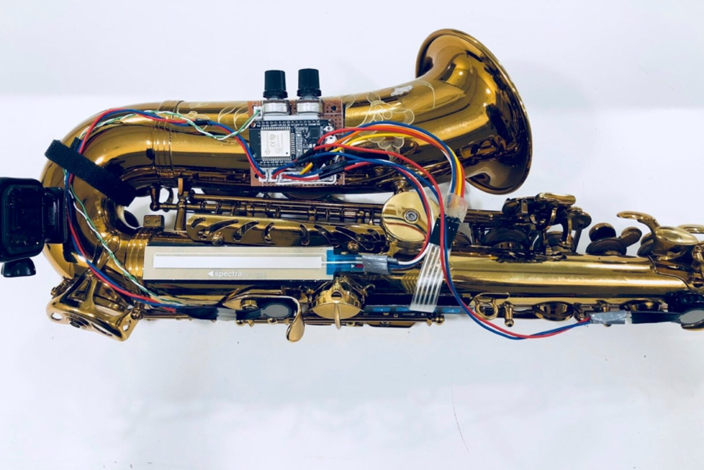
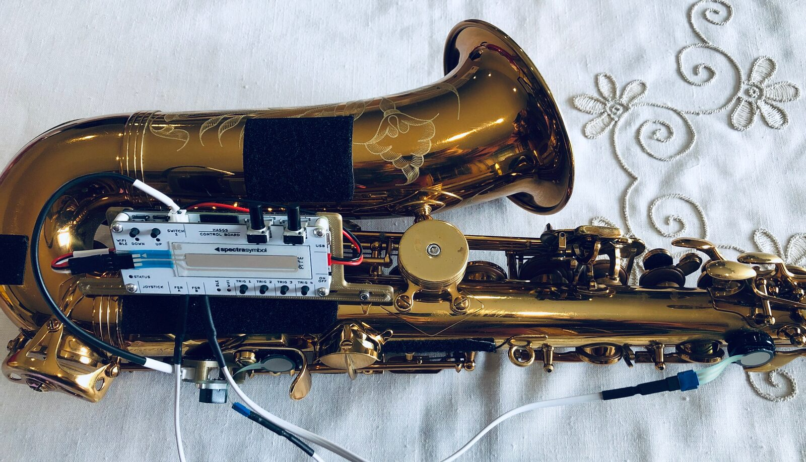
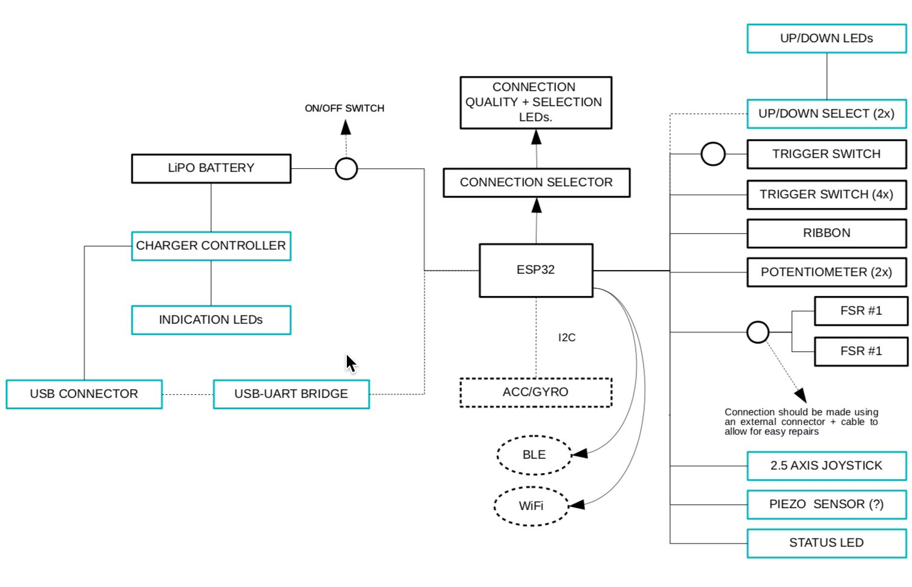
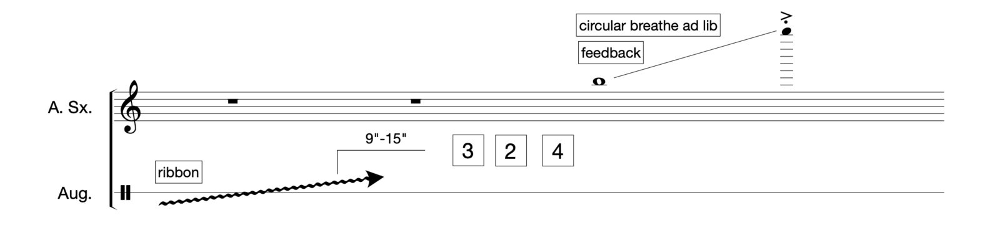
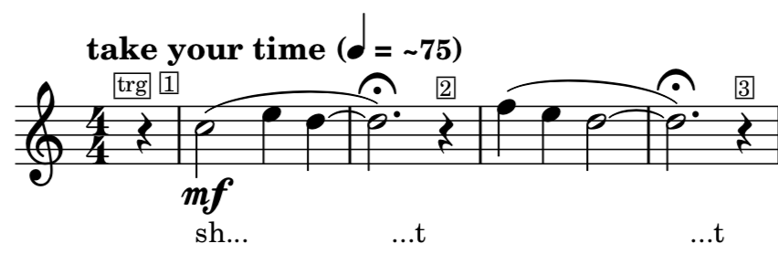
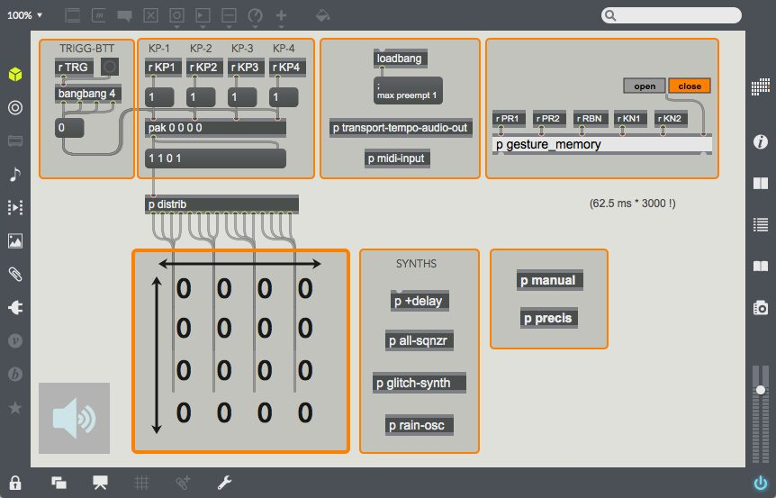

HASGS: Five Years of Reduced Augmented Evolution
Abstract
The work presented here is based on the Hybrid Augmented Saxophone of Gestural Symbioses (HASGS) system with a focus on and its evolution over the last five years, and an emphasis on its functional structure and the repertoire. The HASGS system was intended to retain focus on the performance of the acoustic instrument, keeping gestures centralised within the habitual practice of the instrument, and reducing the use of external devices to control electronic parameters in mixed music. Taking a reduced approach, the technology chosen to prototype HASGS was developed in order to serve the aesthetic intentions of the pieces being written for it. This strategy proved to avoid an overload of solutions that could bring artefacts and superficial use of the augmentation processes, which sometimes occur on augmented instruments, specially prototyped for improvisational intentionality. Here, we discuss how the repertoire, hardware, and software of the system can be mutually affected by this approach. We understand this project as an empirically-based study which can both serve as a model for analysis, as well provide composers and performers with pathways and creative strategies for the development of augmentation processes.
Author Keywords
Augmented Performance, Saxophone, Interactivity, Repertoire
CCS Concepts
•Human-centered computing → Human computer interaction (HCI) → Interaction Devices → Sound-based input / output;
•Applied computing → Arts and humanities → Performing Arts
Introduction
The invention of musical instruments serves the purpose of increasing the expressive capacities of the human beings, and each instrument is, in itself, a technological example of its time. For example, the need for greater sound projection and volume arose during the nineteenth and twentieth centuries, resulting in the re-configuration of instruments (e.g., changing their size and shape). These modifications, however, did not altered the fundamental nature of these acoustic instruments, and the characteristics that define them were largely maintained. The first experiments with recorded and synthesized sounds carried out by Léon-Scott, Edison, Helmholtz and others [1], in the 19th century allowed the realization of works, combining acoustic, mechanical, and electronic elements. The emergence of electricity led to the development of revolutionary and influential new devices, such as microphones and loudspeakers - devices that created the capacity for amplification, recording, and musical reproduction. More recent advances in technology, have revealed countless ways to augment instruments [2] and to endow instruments with new performative contours.
In recent years, the proliferation of new digital instruments (DMIs) has been enormous, together with the recent resurgence of electronic instruments with mixed characteristics. Examples include analog-hybrid and digital-analog synthesizers that can be modular, include a keyboard, or be controlled by wind. Wind-controlled synths have performative interfaces similar to those of the wind instruments, not only in terms of fingering, but also in terms of articulation, dynamics, amplitude and other physical characteristics. This is especially noteworthy given that many instrumentalists and even composers no longer need to develop a virtuosic or highly developed piano technique, moving them away from electronic exploration via the keyboard-based interface model. In response to the proliferation of electronic technology associated with new musical and hybrid musical instruments, and especially with regard to hybrid instruments, the terms “extended” [3] [4], “augmented” [5] [6] [7] and prefixes such as hyper- [8]; [9], meta- [10] [11], infra- [12], and even mutant- [13], were coined to emphasize the different approaches chosen.
In the case of the work presented here, starting from Hybrid Augmented Saxophone of Gestural Symbiosis (HASGS), as the nomenclature itself refers, it was decided to keep the term Augmented in the nomenclature, since the augmentation process itself occurs in a non-intrusive or destructive way, in relation to the mechanic material of the acoustic instrument, trying to add characteristic without compromising its organic qualities, and maintaining the qualities that define this instrument, both in terms of technical and sonic characteristics. In this sense, the IRCAM1 Augmented Violin Project [7], and the Magnetic Resonator Piano [14], or the more recent SABRE2 by Matthias Mueller appear to be more aligned with the philosophy developed here.
HASGS
The HASGS was initially developed within a “do it yourself” (DiY) logic, and was largely justified by some of the repertoire that motivated it, including contemporary repertoire for saxophone and electronics. The same approach was taken during the construction of the initial phase of prototypes, taking into consideration the challenges posed by new works that could be written for the system.
While the initial conception of the HASGS was on developing a system that understands the functionality of an Electronic Wind Instrument (EWI) integrated into an acoustic instrument, this idea was abandoned shortly afterwards because the instrument's own physical structure included an excessive number of sensors. This initial approach posed problems, not only in the instrument's structure and ergonomics, but also by providing myriad technical possibilities that might jeopardize the virtuosity developed over more than twenty years of instrumental practice. Therefore, the term Reduced Augmentation can be applied here, since the existing technology in the new instrument is aimed at significantly boosting performance parameters and not constraining them, thereby lessening the impact on the existing affordances of the acoustic instrument as presented on MIGSI3 Trumpet by Sarah Reid [15].
In the NIME context, one of the fundamental problems regarding the proliferation of augmented instruments is the lack of longevity of these instruments themselves. This lack of longevity is due to several factors, including the lack of written repertoire by a community of composers and the fact that they stick largely only on the performance by their creators. Another fact is that most performers who use these instruments view improvised aesthetics as a way to make musical expression as free as possible [9]. Thus, an important points of issue for the NIME community to consider is the development of communities around the instruments that help performers explores the various potentialities that these instruments can offer. Such communities may be able to contribute to the proliferation of repertoire and to iterative improvement of augmented instruments.
Evolution
Nilson describes in detail the process of design and conception of digital instruments, dividing its evolution process into Design Time and Play Time [16]. Design Time is compared to composition because it is a process that takes place “out of time”, in which design and implementation decisions are made. Play Time is the time that the instrument is played, allowing the evaluation of the instrument in terms of the sensation of the performance, and the possibilities and expressive sense that the instrument can provide.
Playing an instrument is therefore an important part of its design process, performance is the exploration of instrumental possibilities and how the instrument evolves according to what is intended, in terms of response and feedback. Waisvisz argues that it is essential to stop the development of an instrument, take a step back in the construction process and start playing as it is, composing and exploring its limitations [17].
The first HASGS prototype was made using an Arduino Nano plate attached to the instrument’s body and mapping the data from:
• a ribbon sensor;
• four button keypad;
• a trigger button;
• two pressure sensors.
One of the pressure sensors was located on the mouthpiece of the saxophone, in order to detect the pressure exerted on the mouthpiece during a performance. The remaining sensors were positioned within reach of the left and right thumbs. This placement proved to be quite efficient because during a saxophonist’s performance, these two fingers are quite free in relation to the keys, and their positioning and action contributes to the support and stabilization of the instrument. The communication between the Arduino board and the computer was programmed through a serial port using a USB connection, and by running a Node.js application simulating a MIDI port to receive data from the USB port and sending it to a virtual MIDI port.
A second prototype was developed to maintain the characteristics previously described. With the intention of incorporating an accelerometer into the augmented instrument to produce wider gestural capabilities and, above all allowed to imprint some kind of biological feedback, the Myo device was used. The communication between this device and the host computer was carried out through the bluetooth protocol supporting the mapping through the object [Myo] for Max / MSP (written by Jules Françoise). Myo armband technology was used to collect data from:
• accelerometer;
• gyroscope;
• orientation of quartenions;
• eight electromyograms.
The analysis of Myo's behaviour made it possible to collect gestural data and observe performative characteristics specific to the different types of saxophones within the instrumental family. This proved to have an enormous potential to characterise involuntary gestures, as well as collect and embed biological data in different works.
The third prototype of HASGS swapped by the previous computing board for an ESP8266, allowing wireless communication between the augmented instrument and an host computer. The elements of the system were connected via an API, and linked by a phone hotspot serving as router. Regarding the set of sensors, two knobs were added allowing the control of gain or volume, for example. During this process and by optimizing the use of Myo as an optional element in the augmented system, we achieved more stable results using the external object for Max/MSP named Myo Mapper (developed by Balandino di Donato).


Third Prototype of HASGS
Several performance opportunities with new and older repertoire led us to included an ESP32 card, providing Bluetooth and wifi connectivity. For a better attachment to the instrument’s body, we opted for a digital fabrication solution that could be directly integrated into the instrument’s body, taking advantage of the insert points available in the place of the protection side plate. In terms of sensors, several improvements and updates were made, in addition to those already existing in the previous version, including:
up / down selectors;
2.5 axis joystick;
piezo sensor;
connection selector;
accelerometer / gyroscope;
extra trigger switches;
status led indicators (for multiple functions).
The Myo Armband resource was abandoned due to the fact that the technology was discontinued by the company that was producing it, and as well because the analysis of bio muscular feedback data was not used as a resource by most of the composers that came into the project.


Final Prototype of HASGS
Mapping
Mapping constitutes the entire invisible part of the instrument, or the entire process from the physical gesture to the sound heard [18]. In contrast to an acoustic instrument, an augmented instrument or electronic equivalent introduces an arbitrary factor into the design because the properties of its material and its shape do not determine the sounds that can be emitted. For this reason, the performer can experience a feeling of freedom in determining how a certain gesture creates or modulates a sound or timbre.
In the process of developing support and encouraging the creation of a repertoire, a table of instructions was presented describing the possible communications between the sensors and the software. This was sent to several composers, suggesting a standard in relation how the software could be used, giving preference to the programming in Max / MSP. Thus, the table indicated the objects and the attributes related to the mapping of each sensor. An abstraction in Max / MSP has been produced for this purpose.
Instrumental Technique
Thinking about an instrumental technique, like relating the concept in comparison to an acoustic instrument is too auspicious. The use of the augmented instrument's resources, at least as it was being developed, means that each work or each composer has the possibility of changing the data treatment of each sensor in a very flexible way, breaking general linearity. Because the influence of the mapping decisions is fundamental, in it seems appropriate to mention that each work has its own instrumental technique, not the instrument itself generally.
Writing of code is as a means of concretization and execution of a composition and, when it is an integral part of the compositional act, writing code creates and defines the rules of what may be the sound of the work. It is also necessary to analyze that a certain musical style or way of thinking about the musical work may be integrated in certain hardware, not being limited to this last aspect. The following figure establishes the principles of the variety of possible instrumental technique for each work.


Block Diagram of the HASGS
Repertoire
In addition to promoting contemporary notational developments, the creation of a new repertoire suggests different approaches for using and extracting data from the existing sensors in the instrument based on flexible mapping potentials. It is worth noting that the development of unconventional notation, due to the necessity of giving indications on the action of the different sensors, is not dependent on the technology, nor on the control of the devices associated with new instruments for the production of mixed music.
The notation of musical elements has constantly evolved over time, in line with the desire to produce new sounds or textures - an evolution that has also contributed to the development of new instrumental virtuosities. Even when acoustic instruments are played in unconventional ways, the result can sometimes sound like electronic music [19]. In relation to the new repertoire for augmented instruments, and more precisely, in relation to this augmented saxophone system, it is necessary to underline the presence of multiple layers of information, something that is not common when writing for a monophonic instrument.
When analyzing compositional processes for instruments like HASGS, it is important to evaluate the contributions of the different sound materials in isolation, as well as the unity of these same materials in the final composition. This ambivalence is raised by the fact the different roles can be separated, as the composer has a concept, the programmer seeks to execute it in code. The code being executed and the composition interpreted by the machine and performer are cumulative steps, until it is heard by the listener. However, it is possible that the composer and the programmer may collaborate to adjust the code and composition at the expense of the sound result. In this case, it is natural that the compositional concept can be adapted. The programming language itself, the complexity of building the algorithm, the programmer's decisions - all of these can be interpreted as compositional. As a result, the composition that ends up being shared, may call into question whether authorship can be unilaterally attributed, especially given that the role of a programmer may not be limited to engineering. In sum, the programming language used to achieve a given musical result is important, as is the programmer's personal ability (or vocabulary)and the dialect that she can speak within that language, all of which can determines which musical ideas can be expressed.
The following works developed specifically for HASGS were composed between 2015 and 2020, some of which resulted from the presentation of the project at conferences such as EAW4, ICLI5, SMC6 and ICMC7. Among all the works developed for the project, here are three that demonstrate the typology and aesthetics of the repertoire. The works “Indeciduous” by Stewart Engarts and “Disconnect” by Rodney Duplessis resulted from a period of residency at the University of California Santa Barbara, between the months of January and April 2018. The work “Cicadas Memories” by Nicolas Canot was written to be premiered at ICLI 2018 and was updated in 2020.
Indeciduous
The work “Indeciduous” is performed as a free blues on an electronic drum loop. Durations of different phrases are given as suggestions, as are musical gestures based on improvisational fluency. The pitches of sound noticed are performed in order to be part of the recorded loop and consequently triggered by the performer. The action of the looper is managed through a trigger button, suggesting a certain inactivity during the moments when the buffer of the looper is returning the previously recorded material.
In terms of instrumental technique, the work makes use of HASGS in a very organic way by integrating with the acoustic text, and by not presenting great complexity in terms of dynamics control. Above all, the fact that it is a semi-improvised work, based on decisions of action or inaction timings, it is also measured by the the needs of triggering commands or not.


Notation Example for “Indeciduous”
This work does not consist of different sections based on presets - instead, the mapping is constant through its structure. This allows us to assume a linear mapping, with the actions of the technical control of HASGS in constant relation to the behaviour of sound and effects along the work.
Potentiometer 1 | Gain of the Saxophone |
Potentiometer 2 | General Volume |
Pressure 1 (Left Thumb) | Size of Looping Window |
Pressure 2 (Right Thumb) | Loop Location within Looping Window |
Ribbon | Reverberation Time (seconds) |
Trigger | Start/Stop Recording of Loop |
Keypad 1 | Start Drum Machine |
Keypad 2 | Stop Drum Machine |
Keypad 3 | Adds and Trigger Events |
Keypad 4 | Stop All Loops |
The augmented system allows the performer to decided about which elements or phrases to record when creating loops. In this sense, the instrumental discourse is decisive for the integral texture of the work, even if there is no coloring or electronic effects on the acoustic sounds produced by the saxophone. The constant presence of a drone with regular pulse beats creates an atmosphere in which the discourse ends up being adapted. Thus, there are several sound layers: a constant layer; a layer that introduces new material; and a layer that is a reminiscence of past material. This last layer is very dependent on HASGS because the position of the thumbs controls the reproduction of the buffer, and it is also possible that these past elements are presented in retroversion, creating a phenomenon of uncertainty in relation to the electronic material and its relationship with the instrumental material played. As previously mentioned, the notation of the work is referential and works as a suggestion of a harmonic field, which gives a degree of performative freedom. All musical events are entirely controlled by the soloist.
Disconnect
“Disconnect” takes the advantage of discreet and continuous control provided by HASGS, in order to make the performance of electronic processing elements more organically. The electronic component consists of a set of buffers for recording and reproducing the saxophonistic material, including the loop of that material and a bank of filters. The latter is defined with formants for three different vowel sounds: ⟨ə⟩ ("uh"), ⟨ɪ⟩ ("ih"), and ⟨ɑ⟩ (“aw").
There are two distinct sections in the work. The first is based on a loop of melodic material, that - together with the accumulation of these same elements - creates a web of complex harmonic relations, albeit in a language closer to that of tonal development. The second part exposes some of the material from the first; however, the the chain of relationships caused by the constant loops is mainly about timbre and where the game of formants are evident. In this second section, the sounds produced have a windy character, making amplification of the wind inside the aerophone and the sounds of the consonants "sh", "t" and “f”.


Notation Example for “Disconnect”
In terms of mapping, this work maintains the linearity between the controller and its functionality throughout the duration of the piece. Note that pressure sensors were not used for any control parameter in this work.
Potentiometer 1 | Gain of the Saxophone |
Potentiometer 2 | Gain of the Looper Playback |
Pressure 1 (Left Thumb) | |
Pressure 2 (Right Thumb) | |
Ribbon | Playhead Velocity |
Trigger | Start/Stop Recording of Loop and Start Playback |
Keypad 1 | Filterbank 1 |
Keypad 2 | Filterbank 2 |
Keypad 3 | Filterbank 3 |
Keypad 4 | Stop All |
In performative terms, “Disconnect” applies several parameters of electronic effects over the saxophone sound, not only through formants as previously mentioned, these focusing on aeolic sounds, but also, creating variable layers of loops and exploring the of attack transients with different articulations. The sound of the acoustic instrument is the source for the elaboration of the electronics, controlled by the augmented system and generating several layers, sometimes over actual time, sometimes over past events. In terms of notation, we have exactly the same characteristics of the work previously analyzed, with the sharing of a traditional notation and an expressive notation, inherent to the augmented system. All the action of the performance unfolds from the absolute control of the performer.
Cicadas Memories
Composed by Nicolas Canot, “Cicadas Memories” is much more an improvisational process than a written piece of music. The work explores a method that introduces performatively unusual ways of thinking about music in which live music is controlled and altered by updating the past. This means that the performer's gesture will - after a 1 minute delay - change the texture of current electronic sounds providing a sonic background to the melodic discourse and rhythmic impulses of the saxophone. Therefore, the performer has to develop two ways of thinking simultaneously during the performance: the first refers to the present (i.e., the standards imposed by the software but created by the past action of the performer); the second refers to the future (i.e., gestural connection with the sensors ). Thus, the performer has to deal with two temporalities generally separated in the act of performing live music by both determining the future score and improving on past gestures, in the present time. “Cicadas Memories” can be defined as a multitemporal feedback loop. With regard to the sound and musical context, multitemporal feedback explores the play's thinking as a process, perhaps under the influence of Di Scipio’s thought, [20] instead of "written music" movements. To give the performer sufficient freedom, the design of the interaction between sound and gesture in the HASGS is generally not as deterministic as in acoustic music performances associated with new instruments for the production of mixed music.
The fact that “Cicadas Memories” is composed for an augmented instrument is important because it emphasise the relation to the types of values produced by the sensors:
1) Modulating Variables VS Boolean Values;
2) Continuous Stream of Data VS Fixed Values;
3) Freedom of Performer’s Body Gestures VS Necessity to Interact with sensors from the fingers.
This means that the performer's gestural activity through the sensors determines the way the instrument is performed. The additional performance of the sensors in the instrument body modifies or alters performance patterns, making it evident, within the scope of the composition, that the four buttons on the Keypad can be thought of as a 4-bit data flow generator. Because 4 bits mean 16 different values, ranging from 0 to 15, it quickly became clear that these 16 values could be historically related to the sixteenth note of sixteenth notes in a 4/4 measure, given the traditional structure of Western music.


Cicadas Memories Graphical User Interface
TRG (Trigger); KP (Keypad); PR (Pressure); KN (Potentiometer);
The electronic sounds included the creation of sounds from nature including bizarre creatures, various sounds of foliage, cicadas, the splitting of wood, glissandos with bird sounds. This spectrum intends to create a kind of living environment in relation to the soloist's performance decisions.
The values taken from the sensors were normalized between 0 and 1 and the data flow is constant throughout the work, with no differences classes of variable mappings on the timeline, except when a preset is selected.
[p + delay] synth :
pr1/kn2 : delay time;
pr2/rbn : delay feedback;
kn1/kn2 : delay resonance;
pr2/kn1 : overdrive 1 gain;
pr1/kn2 : overdrive 2 gain;
pr1/kn2 : synth output gain;
[p all-sqnzr] synth :
kn1 : synth output gain;
kn1 : right channel delay in samples (stereo width);
NV1 : connected to KP1 inside the [p distrib] sub-patch, it increments the tab note-value to adjust the allpass filters time (note values converted to ms) each time the binary combination of the Keypad 1 is equal to 0 or 8;
NV2 : Keypad 2 binary combination equal to 1 or 4;
NV3 : Keypad 3 binary combination equal to 2;
NV4 : Keypad 3 binary combination equal to 4;
S1 to S16 activates each step of the sequencer via the Keypads (4 steps / sixteenth notes for each PAD in relationship with the display in the main patch);
TRG resets all sequencer’s steps to 0;
[r seq_step] adjusts the number of steps (sixteenth notes, from 1 to 16) of the sequencer in relationship with the binary combinations (inside the [p distrib] sub-patch). This function might appear complex and requires some time using the Keypads only:
KP1 has a value equal to 8;
KP2 has a value equal to 4;
KP3 has a value equal to 2;
KP4 has a value equal to 1;
The different binary combinations of the Keypads values can produce every possible loop length from 1/16 to 16/16. Of course, only the steps (orange squares are active steps) included in the loop length will be played;
[p glitch-synth] synth :
cnt1 to cnt16 (in relationship with the binary combinations of the Keypads) control some synced frequencies defining the gain of the incoming signals in the filters as well as the two samples length, start and end points, speed / pitch in regard to the tempo so, in sync with [p all-synth] and [p rain-osc] patches;
KP1 sets the center frequency of the resonant filters in a random way;
pr1 sets the output gain for each sampler;
kn1 adds some kind of saturation to the signal (left sampler);
kn2 adds some kind of saturation to the signal (right sampler);
[p rain-osc] synth :
(pr1nm/pr2nm) : synth output gain;
kn1nm : range of the random starting frequency (left) of the glissando;
kn2nm : range of the random starting frequency (right) of the glissando;
pr1nm : added value to the starting frequency (left) of the glissando;
pr2nm : added value to the starting frequency (right) of the glissando;
rbn1nm : added value to define the ending frequency of both glissandi (left and right have different values even if they share the same controller);
kn1nm : attack filtering / smoothing (left);
kn2nm : attack filtering / smoothing (right);
(pr1nm/pr2nm) : allpass filters gain;
Conclusions
The HASGS system was developed in close collaboration with several composers and evolved according to the compositional ideas developed during different stages of the project. Analysing the panoply of augmented instruments emerged in the NIME context, several problems were identified at different levels.
So far, the different stages of the development of HASGS have suggested the addition and subtraction of technological resources at the expense of its use as compositional and performative elements. Although our initial desire was to build a system that would emulate an Electronic Wind Instrument, we realized after initial testing that the evolutionary path would have to take another direction. In this sense, “Reduced Augmentation” is advanced as a means of managing and balancing the use of technology. The main concern designing the hardware system was making it unobtrusive to the acoustic instrument, working instead as an augmentative additive kit or set.
We tried to stimulate free composition, although the electronic resources and sensors available include always certain limitations. Technological valences were added, while others were removed based on the elaboration of the pieces, suggestions from composers, peers, and stages of performative practice. The definition of an instrumental technique is largely underlying the aesthetics of the pieces that constitute the repertoire of an instrument. The repertoire developed for HASGS is an example of the creative variety that mapping supports. Consequently, the difficulty of accurately defining a standardised instrumental technique is enormous, even when the relationship between an augmented system and an acoustic instrument allows us to establish similarities, insofar shown by how composers made similar use of the technology. Future work will focus on analysing the performative paradigm regarding augmented performance in contemporary music, and examining the embodied knowledge developed through virtuosic performance with the HASGS.
Acknowledgments
HASGS research was supported by National Funds through FCT - Foundation for Science and Technology under the project SFRH/ BD/99388/2013, from 2014 to 2019. Fulbright has been associated with this project supporting the research residency at University of California Santa Barbara. We acknowledge the composers with pieces mentioned here, Nicolas Canot, Stewart Engart and Rodney Duplessis.
Footnotes
Institute for Research and Coordination in Acoustics/Music
↩Sensor Augmented Bass clarinet Research
↩Minimally Invasive Gesture Sensing Interface
↩Electroacoustic Winds
↩International Conference on Live Interfaces
↩Sound and Music Computing
↩International Computer Music Conference
↩
Citations
Collins, N., Schedel, M., & Wilson, S. (2013). Electronic Music. Cambridge: Cambridge University Press.
↩Miranda, E. R., & Wanderley, M. (2006). New Digital Musical Instruments: Control And Interaction Beyond the Keyboard (Computer Music and Digital Audio Series): A-R Editions, Inc.
↩Penny, J. (2009). THE EXTENDED FLAUTIST: Techniques, technologies and performer perceptions. (Doctor of Musical Arts). University of Melbourne, Retrieved from https://www.jeanpenny.com/uploads/5/5/4/3/55434199/penny_the_extended_flautist.pdf
↩Normark, C. J., Parnes, P., Ek, R., & Andersson, H. (2016). The extended clarinet. Paper presented at the International conference on new interfaces for musical expression: 11/07/2016-15/07/2016.
↩Schiesser, S., & Schacher, J. C. (2012). SABRe: The Augmented Bass Clarinet. Paper presented at the NIME.
↩Thibodeau, J., & Wanderley, M. M. (2013). Trumpet Augmentation and Technological Symbiosis. Computer Music Journal, 37:3(Fall 2013), 12-25.
↩Kimura, M., Rasamimanana, N., Bevilacqua, F., Zamborlin, B., Schnell, N., & Fléty, E. (2012). Extracting Human Expression For Interactive Composition with the Augmented Violin. Paper presented at the International Conference on New Interfaces for Musical Expression (NIME 2012), NA, France.
↩Machover, T. (1989). Hyperinstrument: Musically Intelligent and Interactive Performance and Creativity Systems. Paper presented at the ICMC.
↩Palacio-Quintin, C. (2003). The hyper-flute. Paper presented at the NIME, McGill University Montreal, Canada.
↩Impett, J. (1994). A Meta Trumpet(er). Paper presented at the ICMC, Ann Arbor.
↩Burtner, M. (2002). The Metasaxophone: concept, implementation, and mapping strategies for a new computer music instrument. Organised sound, 7(2), 201-213. doi:10.1017/S1355771802002108
↩Bowers, J., & Archer, P. (2005). Not hyper, not meta, not cyber but infra-instruments. Paper presented at the Proceedings of the 2005 conference on New interfaces for musical expression, Vancouver, Canada.
↩Neill, B., & Jones, B. (2010, April 10-15). Ben Neill and Bill Jones: Posthorn. Paper presented at the 28th International Conference on Human Factors in Computing Systems, CHI, Atlanta, Georgia, USA.
↩McPherson, A. (2010). The Magnetic Resonator Piano: Electronic Augmentation of an Acoustic Grand Piano. Journal of New Music Research, 39(3), 189-202. doi:10.1080/09298211003695587
↩Reid, S., Gaston, R., Honigman, C., & Kapur, A. (2016). Minimal Invasing Gesture Sensing Interface (MIGSI) for Trumpet. Paper presented at the NIME: New Interfaces for Musical Expression, Griffith University, Brisbane, Australia.
↩Nilsson, P. A. (2011). A field of possibilities: Designing and playing digital musical instruments. (Doctoral thesis). Gotemborgs Universitet,
↩Waisvisz, M. (1999). Gestural round table. STEIM Writings. Retrieved from http://steim.org/media/papers/Gestural%20round%20table%20%20Michel%20Waisvisz. pdf
↩DeLahunta, S. (2010). Shifting Interfaces: art research at the intersections of live performance and technology. (Doctorate). University of Plymouth, Retrieved from http://hdl.handle.net/10026.1/2711
↩Roads, C. (2015). Composing Electronic Music: A New Aesthetic. NY: Oxford University Press.
↩Di Scipio, A. (2015). The Politics of Sound and the Biopolitics of Music: Weaving together sound-making, irreducible listening, and the physical and cultural environment. Organised sound, 20(3), 278-289. doi:10.1017/S1355771815000205
↩